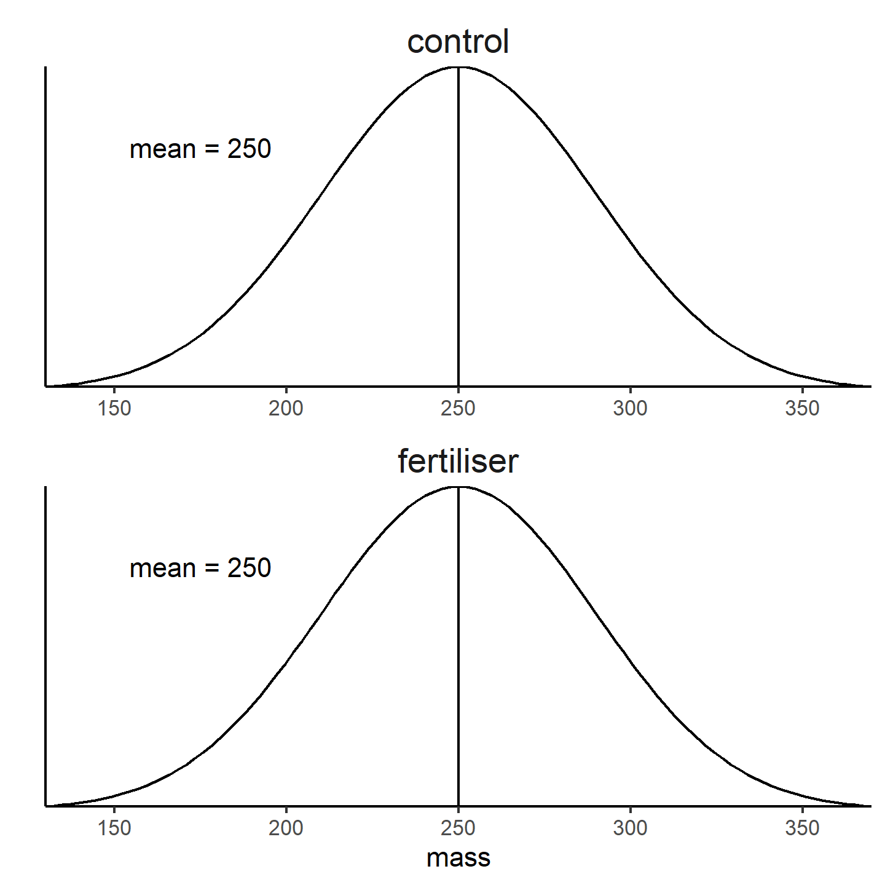

9 The logic of hyothesis testing
Important
You are reading a work in progress. This page is a dumping ground for ideas and not really readable.
9.1 Why do we do statistical testing?
9.2 Samples and populations
9.3 Sampling distributions
9.4 Logic of hypothesis testing
null hypothesis What you expect to happen if nothing interesting biologically is occurring.
\(H_0\)
alternative hypothesis \(H_1\)
reject or not reject
9.4.1 Hypothesis Testing: steps
Set up H0 “no effect”
Design experiment to test null hypothesis and collect data
Determine the probability of our data if H0 is true
Decide whether to reject or not reject the H0 based on that probability p ≤ 0.05 reject H0; p > 0.05 do not reject H0
9.4.2 Example
Question: Does this fertiliser increase the crop yield?
- Set up the null hypothesis There is no difference between the mass of plants grown with fertiliser, \(\bar{x_f}\), and the mass of the plants grown without fertiliser, \(\bar{x_c}\).
\(H_0 : \bar{x_f} -\bar{x_c} = 0\).